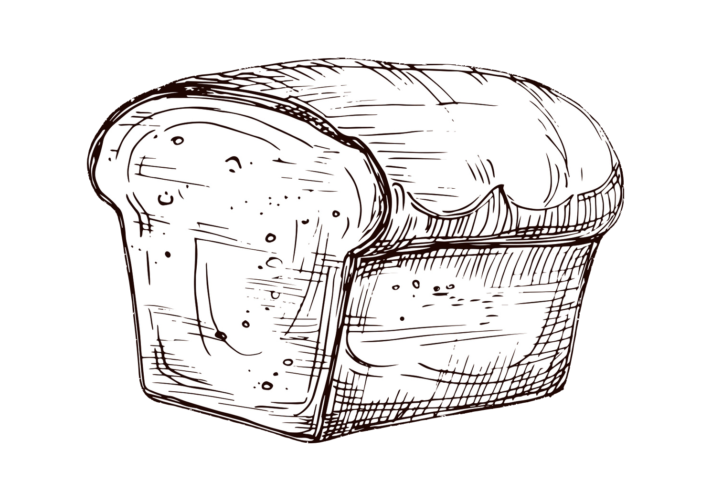
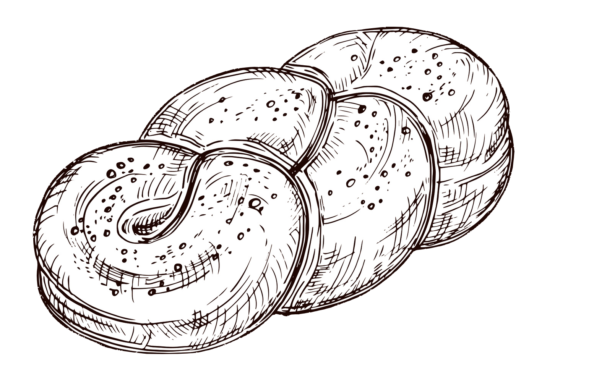
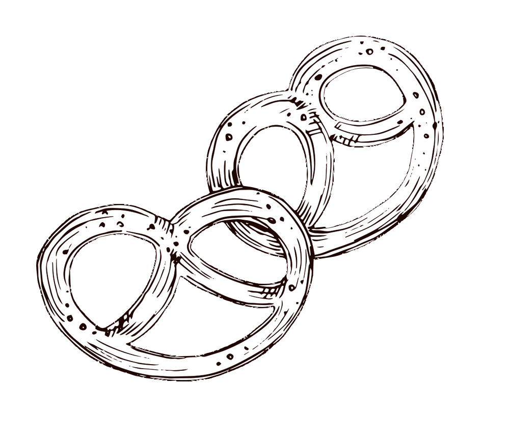

White Bread Recipe
Ingredients
- 10 cups of all-purpose flour
- 3 tablespoons of unsalted butter
- 1 tablespoon of salt
- 1/4 cup of granulated sugar
- 3 cups of warm water
- 4 teaspoons of instant yeast
Instructions
- Dissolve yeast in warm water. Let sit for five minutes.
- Add 2 2/3 cups of water, sugar, salt, butter, and 5 cups of flour. Stir to combine.
- Knead dough. Gradually add the remaining flour. Knead until a soft ball of dough forms.
- Place the dough in a lightly greased bowl and cover completely. Proof for 45 minutes to an hour.
- Place dough on a flat surface. Gently press to remove air pockets.
- Pat dough into a 9x12" rectangle. Tuck the ends of the roll and place into loaf pans.
- Let dough proof until they are doubled in size, about 30 minutes.
- Preheat oven to 400 degrees F. Insert dough in oven once proofed.
- Bake loaves for 30 minutes.
- Enjoy!
This white bread recipe is a simple way to get started on your breadmaking journey. Basic yet tasty, this bread is perfect for sandwiches, fruit jam, or even by itself with a little bit of butter!
Make sure to keep an eye on it during the proofing and baking process so that your bread comes out perfect!
You can also try putting your dough into differently shaped loaf pans in order to make funky shapes that you and your family will love!

Challah Bread Recipe
Ingredients
- 8 cups of all-purpose flour
- 5 eggs
- 1 tablespoon of salt
- 1/2 cup of sugar
- 1/2 cup of vegetable oil
- Pinch of poppy seeds
- 4 teaspoons of active dry yeast
Instructions
- Dissolve yeast and 1 tablespoon of sugar in 2 cups of lukewarm water.
- Whisk vegetable oil into the mixture, then beat in 4 eggs one at a time.
- Add remaining sugar and salt, gradually add flour.
- Place dough onto a floured surface and knead until smooth.
- Place dough in bowl, cover with plastic wrap, and let proof for 1 hour or until doubled in size.
- Punch down the dough, then cover and let proof again for another half-hour.
- Take half the dough and form into 6 balls. Roll each ball into a strand about 12 inches long.
- Place each strand parallel to each other, braiding as you go. Tuck in the ends of the dough.
- Beat remaining egg and brush onto dough surface. Let proof for 1 hour.
- Preheat oven to 375 degrees and brush loaves with egg wash again. Decorate the top with poppy seeds.
- Bake in oven for 40 minutes. Once done, cool loaves on a rack.
- Enjoy!
This challah bread recipe is perfect for parties or other special occasions. The inclusion of eggs in the dough adds some extra richness! The dough can be braided similar to hair, so different styles and patterns can be achieved depending on what look you want to go for.
Try out a circular braid, or braid with multiple "strands" for the best results! Make sure to leave some room in the oven so that the challah has room to grow.

Pretzel Recipe
Ingredients
- 1 1/2 cups of warm water
- 2 teaspoons of active dry yeast
- 1 teaspoon of salt
- 1 tablespoon of brown sugar
- 1 tablespoon of melted unsalted butter
- 4 cups of all-purpose flour
- coarse sea salt to taste
- 1/2 cup of baking soda
Instructions
- Dissolve yeast in warm water. Let sit for five minutes.
- Whisk in salt, brown sugar, and melted butter. Slowly add in 3 cups of flour.
- Place on flat surface and knead until dough forms, adding the rest of the flour.
- Let the dough rest and preheat the oven to 400 degrees F.
- Cut the dough into 1/3 cup sections. Roll into a 20-inch rope. Form a circle with the dough and twist the ends together. Bring the twisted ends towards yourself to create the pretzel shape.
- Bring 9 cups of water to a boil and add baking soda. Drop pretzels into the boiling water for 30 seconds.
- Remove pretzels from the boiling water and place onto baking sheet, sprinkling with coarse sea salt.
- Bake pretzels for 15 minutes until golden brown.
- Enjoy!
Pretzels are a great snack for movie night, or just every day. Invite your friends over for a pretzel party! Pretzels can be made fun with a variety of different dips.
Nacho cheese is a common one- you can also add sliced jalapenos for a bit of a spicy kick. Sweet pretzels are also a good idea- just sprinkle in cinnamon sugar!